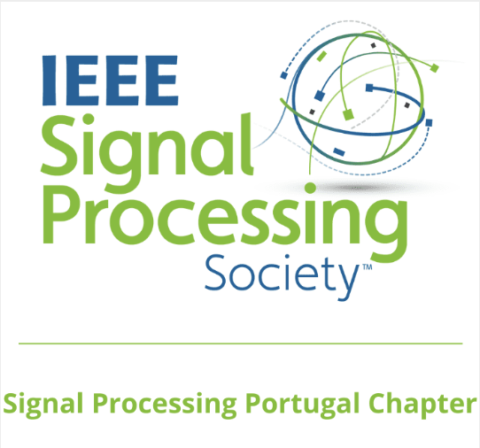

Organizers
Prof. Lucas Thomaz (IT-IPLeiria)
lucas.thomaz@co.it.pt
Prof. Nuno Rodrigues (IT-IPLeiria)
nuno.rodrigues@ipleiria.pt
Nicolas Vasconcellos
nicolas.vasconcellos@ieee.org
Prof. Fernando Pereira (IT-IST)
fp@lx.it.pt
Sponsors and Support
